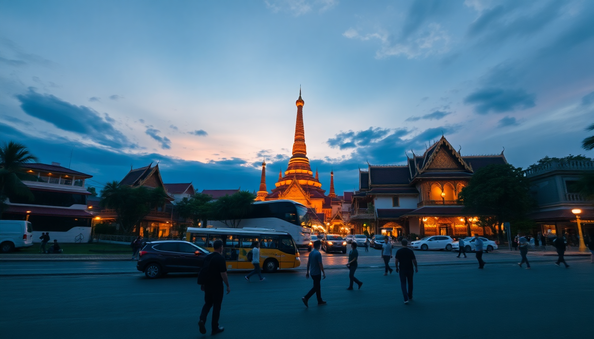

10 Days in Thailand: Bangkok, Chiang Mai & Phuket

I spent 10 days moving through Bangkok, Chiang Mai, and Phuket last November. This itinerary is what actually worked—no overstuffed days, no tourist traps I regretted. Here’s exactly how I’d do it again, with the hotels, restaurants, and shortcuts that saved me time and money.
How should you split 10 days between Bangkok, Chiang Mai, and Phuket?
Three cities in ten days means you move fast. I did 3 nights in Bangkok, 3 in Chiang Mai, and 3 in Phuket, with the last day flying home from Phuket. That split gave me enough time for the essentials without feeling like I was packing every morning.
The only non-negotiable: book your internal flights early. I used Bangkok Airways for the Chiang Mai to Phuket leg—it was 1 hour 50 minutes direct. The train between Bangkok and Chiang Mai takes 12 hours, which eats a full day. Save that for a longer trip.
- Bangkok (3 nights): Arrive, recover from jet lag, hit the big temples, eat street food.
- Chiang Mai (3 nights): Temples, cooking class, night market. Slower pace.
- Phuket (3 nights): Beach time, island hop, or just sit by the pool. You’ll be tired.
Where should you stay in Bangkok for first-timers?
I stayed at Hotel Once Bangkok on the Chao Phraya River in the Charoen Krung area. It’s not near Khao San Road (which is a plus—Khao San is fine for one beer, not for sleeping). The room had a river view, and the ferry pier was a 3-minute walk. That ferry becomes your best friend.
For location, the Sukhumvit area is more central if you want nightlife and BTS Skytrain access. I preferred the river for the views and quieter evenings. Either works—just don’t stay in a hostel near the backpacker strip unless you’re 22.
- My pick: Hotel Once Bangkok (riverfront, quiet, good breakfast)
- Budget option: Ibis Styles Bangkok Sukhumvit Phra Khanong (clean, near BTS On Nut)
- Splurge option: Mandarin Oriental (classic, but you pay for the name)
What are the best things to do in Bangkok without wasting time?
Skip the Grand Palace if you hate crowds. I went at 8:30 AM (opens at 8:30) and it was already packed by 9. The architecture is impressive, but the heat and hawkers make it a chore. Instead, I’d do Wat Pho (the reclining Buddha) and Wat Arun (across the river) on the same morning. Both are less crowded and more interesting.
For food, skip the tourist-heavy Khao San Road stalls. Walk to Thipsamai for pad thai—it’s the real deal, wrapped in egg. The line moves fast. For a proper meal, Sorn is impossible to book, so try Baan Ice for southern Thai curry. No reservation needed.
- Morning: Wat Pho (7:30 AM opening), ferry to Wat Arun
- Lunch: Thipsamai for pad thai
- Afternoon: Chatuchak Weekend Market (if it’s Saturday or Sunday—skip otherwise)
- Evening: Rooftop bar at Tichuca (the one with the fiber-optic tree) for sunset
How do you get from Bangkok to Chiang Mai efficiently?
Fly. I took Thai AirAsia for about $40 one-way. The flight is 1 hour 15 minutes. Don’t take the overnight train unless you really love train travel—it’s bumpy, cold from AC, and you arrive groggy. The bus is worse.
At Chiang Mai International Airport, grab a Grab (Southeast Asia’s Uber) to your hotel. It’s 15 minutes to the Old City. Don’t let touts at the exit upsell you on private taxis—Grab is half the price.
What should you actually do in Chiang Mai for 3 days?
Chiang Mai is about temples, food, and pace. I stayed at The Inside House in the Old City—a boutique hotel with a pool and breakfast included. It’s inside the moat, so everything is walkable.
Day one: walk to Wat Chedi Luang (the big ruined temple in the center), then Wat Phra Singh. Both are free or near-free. For lunch, Khao Soi Khun Yai does the best khao soi in town—a creamy curry noodle soup with chicken. It’s a 15-minute walk from the Old City.
Day two: book a half-day cooking class at Mama Noi Thai Cookery School. You visit a local market, then cook four dishes. It’s not fancy, but it’s hands-on and you eat everything you make. Cost was about $30 per person.
Day three: Doi Suthep temple on the mountain. Take a red songthaew (shared truck taxi) from the Old City for 60 baht per person. The 306 steps are real, but the view over Chiang Mai is worth it. Go early—by 9 AM the tour buses arrive.
- Must-eat: Khao Soi Khun Yai (cash only, closes at 3 PM)
- Night market: Sunday Walking Street (only on Sunday—Ratchadamnoen Road, huge)
- Skip: Elephant sanctuaries that let you bathe them—most are unethical. Research Elephant Nature Park if you must go.
Is Phuket worth it, or should you skip to an island?
Phuket gets a bad rap for Patong Beach (which is loud, dirty, and full of drunk tourists). But the island is big—you don’t have to stay near Patong. I stayed at The Shore at Katathani in Kata Noi Beach. Quiet, private pool villas, and the beach is clean. It’s not cheap, but it felt like a reward after 6 days of temple-hopping.
If you want cheaper, Kata Beach is next door and has more restaurants. For nightlife, Patong is your only option, but I’d avoid it unless you want ping-pong shows and bucket drinks.
- Beach pick: Kata Noi (quiet, swimmable)
- Island day trip: Phi Phi Islands from Phuket—book a speedboat tour (full day, about $60). It’s touristy but the scenery is unreal.
- Food: Suay Restaurant in Cherngtalay for creative Thai. Kan Eang@Pier in Chalong for seafood.
- Skip: Phuket Big Buddha (overcrowded, construction ongoing)
FAQ
Is 10 days enough for Thailand? Yes, if you stick to three places and fly between them. You won’t see everything, but you’ll hit the highlights without burnout. I’d rather do three cities well than five cities in a blur.
What’s the best time of year for this itinerary? November to February—cooler, dry, and less rain. I went in November and had sunny days in Bangkok, a bit of drizzle in Chiang Mai, and perfect beach weather in Phuket. Avoid April (hottest month) and October (monsoon in Phuket).
Do I need a visa for Thailand? Most nationalities get 30 days visa-free on arrival. Check your country’s status. You need a passport valid for at least 6 months. I didn’t need to show an onward ticket, but have one saved on your phone just in case.
Conclusion
- Fly between cities—trains and buses eat too much time.
- Stay in the Old City in Chiang Mai for walkability.
- Skip Patong in Phuket unless you want nightlife.
- Eat at local spots (Thipsamai, Khao Soi Khun Yai) over tourist restaurants.
- Book internal flights and hotels at least 2 weeks ahead for best prices.